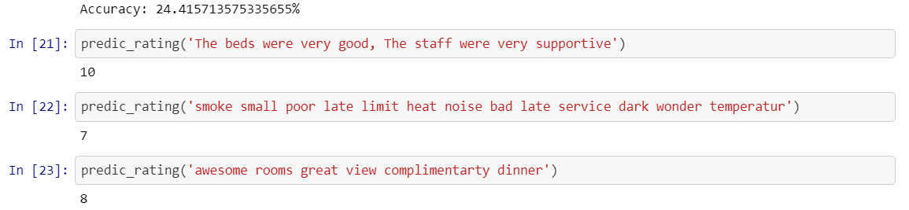
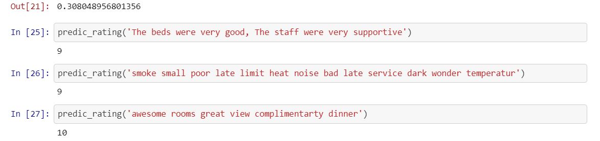
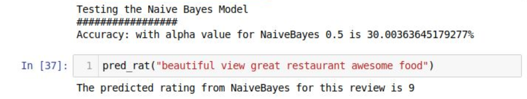
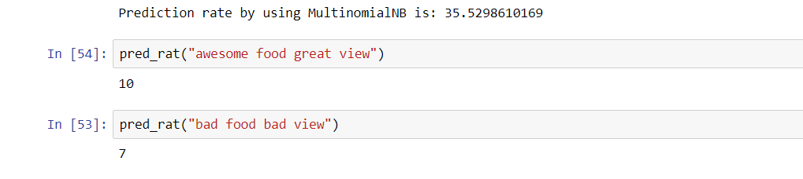

Cloud Computing for Data Analysis: Rating Prediction System

Authors
- Akshay Bankar (abankar1@uncc.edu)
- Keyukumar Hansoti (khansoti@uncc.edu)
- Kiran Korey (kkorey@uncc.edu)
Overview
- The Project aims to predict ratings based on the reviews provided by the users.
- The goal of the project is to implement k-Nearest Neighbors and Naive Bayes Algorithm with the help of PySpark.
Motivation
- Every single product or place today has its own profile on web giving out information about it to the customers and visitors.
- It not only tells the user about its features but also the reviews and ratings given to it by the people who have experienced it.
- This urged us to automate the technique of rating prediction based on reviews and learn about the algorithms behind it.
- The goal of this project is to determine whether a customer should buy that product or not just by looking at the ratings.
- This project can be used to any data set which involves user reviews and can predict its ratings though, some pre-processing could be required.
Data
- The Kaggle dataset “Hotel Reviews Data in Europe” will be used which is provided by the booking.com.
- The data set contains 515,000 customer reviews and scoring of 1493 luxury hotels across Europe.
- The data set contains 17 fields like Hotel Name, Average Score, Negative Review, Positive Review, Review Total Negative Word Counts, Review Total Positive Word Counts, Reviewer Score.
- Out of the 17 fields, we will be using Negative Review, Positive Review and Reviewer Score fields.
- Negative Review: Negative Review the reviewer gave to the hotel. If the reviewer does not give the negative review, then it should be: ‘No Negative’
- Positive Review: Positive Review the reviewer gave to the hotel. If the reviewer does not give the negative review, then it should be: ‘No Positive’
- Reviewer Score: Score the reviewer has given to the hotel, based on his/her experience.
- The Negative Review and Positive Review will be used as the features and Reviewer Score will be used as targets. The reviews will be converted to count vectors and fed to the model.
- The size of the data set is around 227MB .
-
Data Link: 515K Hotel Reviews Data in Europe
Tasks Involved and Steps Implemented
The project uses classification approach to predict ratings and classify reviews. It includes implementation of two algorithms: K-Nearest Neighbors & Naive Bayes. The tasks involved are as follows:
- Understanding the algorithm
- Setup a cluster using Amazon EMR with Spark
- Install necessary software like Jupyter Notebook, sci-kit learn library, nltk library, pandas, etc…
- Preprocessing the data
- Implementing k-Nearest Neighbors and Naive Bayes with sci-kit learn library
- Deploying the code and data on Amazon EMR
- Output generation
- Implementing k-Nearest Neighbors and Naive Bayes with PySpark
- Execute the algorithms and generate reports
- Project Report
Algorithms
k-Nearest Neighbor
k Nearest Neighbour clustering (kNN) is a supervised classification technique that looks at the nearest neighbours, in a training set of classified instances, of an unclassified instance in order to identify the class to which it belongs.
The model for kNN is the entire training dataset. When a prediction is required for a unseen data instance, the kNN algorithm will search through the training dataset for the k-most similar instances.
The prediction attribute of the most similar instances is summarized and returned as the prediction for the unseen instance.
The similarity measure is dependent on the type of data. For real-valued data, the Euclidean distance can be used.
For other types of data such as categorical or binary data, Hamming distance can be used.
In the case of regression problems, the average of the predicted attribute may be returned.
In the case of classification, the most prevalent class may be returned.
The kNN algorithm belongs to the family of instance-based, competitive learning and lazy learning algorithms.
Instance-based algorithms are those algorithms that model the problem using data instances (or rows) in order to make predictive decisions.
The kNN algorithm is an extreme form of instance-based methods because all training observations are retained as part of the model.
It is a competitive learning algorithm, because it internally uses competition between model elements (data instances) in order to make a predictive decision.
The objective similarity measure between data instances causes each data instance to compete to “win” or be most similar to a given unseen data instance and contribute to a prediction.
Lazy learning refers to the fact that the algorithm does not build a model until the time that a prediction is required.
It is lazy because it only does work at the last second. This has the benefit of only including data relevant to the unseen data, called a localized model.
A disadvantage is that it can be computationally expensive to repeat the same or similar searches over larger training datasets.
Procedure
- Load data (here data is loaded from a file)
- Pre process the data using NLP techniques
- Tokenize the reviews and remove stop words, emoticons, punctuations, non alphanumeric words
- Perform stemming on the tokens using Porter Stemmer
- Perform lemmatizing on the tokens using WordNetLemmatizer
- Convert class labels to int
- Convert the reviews to sparse matrix of Count vectors
- We have used Sci-kit library CountVectorizer to convert the reviews to sparse matrix
- we have ignored the words who appear in more than 70% of the documents and have considered only the top 500 features to reduce the feature space.
- Split the data into test and training sets
- Compute the distance from a test instance (A member of the test set) to all members of the training set
- Euclidean distance is used as distance measure
- Which is the Square root of sum of squares of the difference between the values of the instances
- Select the k nearest neighbours to the test instance
- Assign the test instance to the class that appeared most in these nearest neighbours
For this algorithm the distance between every instance of the test set has to calculated with every instance of test set, for this we tried using cartesian method, but this causes memory error and also takes a lot of time. So, we changed the approach to collect each test instance and map each train instance to the collected test instance.
Naive Bayes Classifier
Naive Bayes classifiers are a collection of classification algorithms based on Bayes’ Theorem. It is not a single algorithm but a family of algorithms where all of them share a common principle, i.e. every pair of features being classified is independent of each other.
For example, a fruit may be considered to be an apple if it is red, round, and about 3″ in diameter and as an orange if it is orange, round, and about 2.5″ in diameter . A Naive Bayes classifier considers each of these “features” (red, orange, round , 2.5″ and 3” in diameter) to contribute independently to the probability that the fruit is an apple/orange, regardless of any correlations between features. Features, however, aren’t always independent which is often seen as a shortcoming of the Naive Bayes algorithm and this is why it’s labeled “naive”.
Naive Bayes is a probabilistic classifier that makes classifications using the Maximum A Posteriori decision rule. Hence, to find posterior probability it will first calculate the prior probability and then likelihood of an object to a particular class.
Prior probabilities are based on previous experience and often it used to predict outcomes before they actually happen.
To compute the maximum likelihood for new object, calculate the probability of that object belonging to each class label and class with the highest probability will be chosen as a predicted class for that object.
In the Bayesian analysis, the final classification is produced by combining both sources of information, i.e., the prior and the likelihood, to form a posterior probability using the Bayes’ rule.
Procedure
- Load data (here data is loaded from a file)
- Pre process the data using NLP techniques
- nltk library was used for the preprocessing
- Tokenize the reviews and remove stop words, emoticons, punctuations, non alphanumeric words
- Perform stemming on the tokens using Porter Stemmer
- Perform lemmatizing on the tokens using WordNetLemmatizer
- Convert class labels to int
- Split the data into test and training sets
- Calculate the total words in training data and it’s frequency
- Calculate the number of words in each class and it’s frequency in that class
- Calculate the probability (likelihood) of a word being in a class and probability of each class
- Compute the likelihood of the review in each class and choose the class with the maximum likelihood as a predicted class for that review
Expectations/Aspects
1. What to expect?
The main aim of the project deliverable will be to predict the rating based on the reviews provided by the users.
- Data will be pre-processed using NLP techniques like Stemming and Lemmatization to make sense of the reviews provided by the customer and how harsh can that review be on the rating.
- After pre processing the Negative Review column and Positive Review column will be combined to make a single column “Review" which will be used as a input for the algorithms.
- The data will be divided into training and test set and use training set to train the models and use test set to calculate the accuracy of the models based on the unseen data.
- Implementation of both the algorithms and a proper documentation of outcomes of this project, which is the prediction of rating for customers reviews.
- Compute the accuracy of the models.
- Run the models in Amazon EMR
2. Likely to accomplish
- Compare the results of kNN and Naïve-Bayes implemented algorithms.
- Implementation of kNN model with sci-kit libraries and comparison of the accuracy
- Implementation of Naïve Bayes model with sci-kit libraries and comparison of the accuracy
- Documentation and online-publishing of the codebase.
3. Ideal Accomplishments.
- Compare the results of the implemented models with the library implementations like sci-kit learn
- Suggested modifications/changes in the existing or project implementation.
Perform K-Fold cross validation and tune the algorithms by testing it on different alpha values for Naïve Bayes and K values for kNN algorithms.Creating a easy to use library that one can use for analysis purpose.
Tools & Technology
- Amazon EMR (Spark 2.2.0) (1 master and 2 slaves) for running the program on cluster.
- Apache Spark - PySpark
- Jupyter Notebook
- Git for tracking the code changes.
- GitHub for hosting the website.
Installation
-
Create a Spark Cluster on Amazon EMR and get the details of the cluster to use it on Terminal.
Choose the following configuration for the cluster:Spark: Spark 2.3.2 on Hadoop 2.8.5 YARN with Ganglia 3.7.2 and Zeppelin 0.8.0Follwing specification was choosen for the Instances.
M3 General Purpose Extra Large (m3.xlarge), Memory: 15.0 GiB, CPU: 4 vCPUs, Storage: 80 GiB (2 * 40 GiB SSD) -
Connect to the Cluster with the keypair you selected.
You might need to add SHH rule to the Master EC2 Security groupssh -i keypair.pem hadoop@ec2-52-91-121-171.compute-1.amazonaws.com -
Copy all the Jupyter notebooks and Data files to Master EC2 instance
You can use WinScp or scp command to do this.
-
Install / Import following packages to the cluster.
sudo pip install jupyter sudo pip install sklearn sudo pip install pandas sudo pip install -U nltkOpen python and execute the following code to download the nltk data.
import nltk nltk.download("stopwords") nltk.download("wordnet") -
Repeat Step 2 and 3 to the Slave EC2 instances.
In our case we had 2 slave EC2 instances.
To connect to Slaves you have to login as ec2-userssh -i keypair.pem ec2-user@ec2-54-197-45-104.compute-1.amazonaws.comFor nltk you have to move the nltk_data folder to “/home/” location
-
SSH to your AWS machine with port forwarding and Configure PySpark driver to use Jupyter Notebook
For this while connecting to the instance you need to redirect all the request from a specific port from local machine to EC2 instance.ssh -i nvirginia_kkorey.pem -L 8000:localhost:8889 hadoop@ec2-52-91-121-171.compute-1.amazonaws.comOnce connected you need to add some Environment variables to the path the master instance
export PYSPARK_DRIVER_PYTHON=jupyter export PYSPARK_DRIVER_PYTHON_OPTS='notebook --no-browser --port=8889' source ~/.bashrc -
Access the Jupyter Notebook from your Web-Browser
Typepysparkon your AWS machine and copy the Jupyter notebook token displayed.
Go to your web-browser and navigate to the following URL:localhost:8000Paste the copied token in the required field and press Log in.
Results
The models were executed in Amazon EMR Cluster and accuracy is used as the evaluation metric to compare the algorithms.
Since the feature we used is just bag-of-words the accuracy of the models is not high, if other features like word embedding with context window and TF-IDF or if n-grams are used the accuracy of the model can be increased.
But, the main moto behined this project was to implement the algorithms in a distributed way, which was accomplished and to verify the corretness of the algorithms, their accuracies were compared with the library versions of the same.
As we can see from the below screen captures, there is only a difference of around 5% between the implemented version and the library versions for both the algorithms.
k-Nearest Neighbor
For kNN because of the memory constraints and time constraints we had to run for 100K records.
-
Implementation:
 -
Sk-learn library:

The implemented version of the algorithm achieved an accuracy of 24.415% and the library version of the algorithm achieved an accuracy of 30.80%, this validates the implementation of the algorithm.
Naive Bayes Classifier
For Naive Bayes we used the complete data set i.e. 500K records.
-
Implementation:
 -
Sk-learn library:

The implemented version of the algorithm achieved an accuracy of 30.003% and the library version of the algorithm achieved an accuracy of 35.52%, this validates the implementation of the algorithm.
The difference in the acuracy is because of the default parameters that Sk-learn uses for the algorithms.
Conclusion
- The objective of the project was to predict the rating based on the review and to implement the kNN and Naive Bayes algorithm in a distributed fashion which was accomplished successfully.
- The accuracy of the models could be improved by changing the features used, which is discussed in the future scope.
Future Scope
- Though the algorithms implemented are correct which can be verified from the accuracy of the library version of the same algorithms, the features choosen was not appropriate.
- We can choose better features like TF-IDF and consider bigram and Trigram possibilities and also perform feature union by choosing features like POS tagging and considering the similar words also for the words in the reviews.
- We can package this as a library for use by ecommerce websites.
Code
Challenges Faced
- Out of Memory Error was one of the biggest challenges that we faced, to resolve this issue we reduced the memory consumption by each task and also moved the execution of Algorithms from local machine to AWS EMR clustures.
- For kNN we used the collect loop insted of cartesian product, which was consuming a lot of memory.
- In AWS EMR we used 1-Master : 2-Slave architecture, at first we installed the necessary packages only in the master instance, but our method of implementation needed the packages to be installed in the slave instances as well, it took a while to figure this out and resolve this issue.
- When trying to test the data with library implementation, ran out of memory even in EMR, so to parallelize the prediction and for this we had to brod cast the classifier object to the slave nodes.
- Could not find the scikit-learn library in DSBA hadoop cluster
Work Division
The complete project has been accomplished together with collabrating and taking inputs from all the team members.
| Name | Task |
|---|---|
| Akshay Bankar | Split data into train and test |
| Compute accuracy of the model | |
| Implementation of Naïve Bayes model with sci-kit libraries and comparison of the accuracy | |
| Keyur Hansoti | Pre-processing |
| Build the model by Implementing Naïve Bayes | |
| Make a web page illustrating your results | |
| Compare the results | |
| Kiran Korey | Install Spark and get EC2 ready for running |
| Build the model by implementing KNN | |
| Build the model by Implementing Naïve Bayes | |
| Implementation of KNN model with sci-kit libraries and comparison of the accuracy |